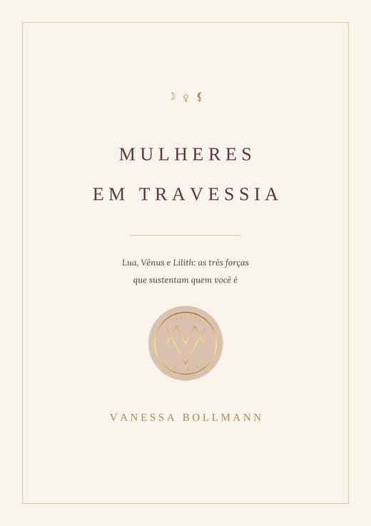
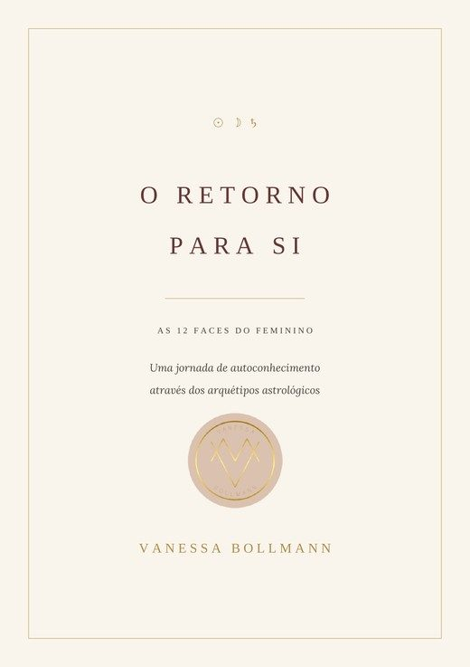

Muitas de nós aprendemos a buscar do lado de fora: estudar, construir carreira, casar, conquistar, acumular. E numa época em que a vida das outras está sempre à vista, a comparação virou rotina, e a régua para medir a nossa vida passou a ser sempre a de alguém. Vivendo de fora para dentro, fomos nos desconectando de quem realmente somos: perdemos o brilho pelo caminho, deixamos de reconhecer a beleza, a força e a natureza que sempre estiveram ali, e hoje olhamos para dentro e não nos reconhecemos mais. Isso não é falha de ninguém. É só a hora de voltar para casa.
Cada mulher carrega uma mandala astrológica só sua, a fotografia do céu no seu instante, na sua hora, no seu lugar, um desenho que nenhuma outra pessoa no mundo vai repetir. É esse desenho que eu leio, e é dele que eu parto para te devolver o que você foi deixando pelo caminho. A minha intenção é simples: te devolver a capacidade de se enxergar com amor, do jeito que você é agora, sem precisar consertar nada antes de merecer esse olhar.
Se você se conectou com a minha energia até aqui e quer se aprofundar com um atendimento personalizado, entre em contato. A partir daqui, você escolhe o caminho.

Quatro fases do feminino se revezam dentro de você. Clique e veja qual está no comando agora.
A energia feminina é sutil e potente ao mesmo tempo: é a que sente antes de entender, a que deseja, a que sabe sem precisar de prova. Quando ela está disponível em você, tudo o resto acompanha. A mandala mostra por onde essa potência está pedindo passagem agora, e o mapa guarda isso em três pontos: Lua, Vênus e Lilith.

Um caminho de volta para as três forças que contam quem você é: do que você precisa, o que você deseja e o que foi calado em você. 36 capítulos pela sua tríade (Lua, Vênus e Lilith, signo a signo), as quatro mulheres do ciclo, o capítulo sobre Vênus e dinheiro e as práticas de corpo.
As doze energias vivem em você, cada uma em uma intensidade. Abra a sua mensagem e descubra qual está falando mais alto agora.

Um guia de autoconhecimento pelos doze arquétipos do zodíaco: a ferida particular de cada um, a sombra, o despertar e uma prática simples para atravessar. Não exige conhecer o seu mapa, porque você carrega dentro de si as doze energias do zodíaco, cada uma na sua intensidade.
Durante muito tempo busquei entender questões que eu mesma não sabia nomear.
Sou contadora de formação, e depois disso vieram outros cursos e uma longa jornada de estudo. Mas foi trabalhando na empresa do meu pai que a minha vida tomou forma. Era boa no que fazia e as pessoas me elogiavam por isso, só que eu estava presente em tudo e protagonista de nada. Eu vivia nos bastidores da minha própria vida.
Transbordou na pandemia. Vieram rupturas em sequência, mudanças que de fora pareciam perdas, mas que por dentro eu sentia como transformações necessárias, do jeito que só uma escorpiana entende. Nada do que estava acabando era o problema. O problema é que eu tinha deixado de reconhecer em mim a beleza, a força e a natureza que as outras pessoas enxergavam.
A minha primeira consulta com um astrólogo foi um divisor de águas. Ele leu o meu mapa e colocou em palavras tudo aquilo que eu sentia por dentro e não conseguia nomear. Não foi revelação nem mágica, foi alívio: aquilo tinha nome, tinha duração e tinha propósito. Eu não estava destruindo o que construí, estava soltando o que já não me sustentava.
A cada vez que eu relia o meu mapa, e quanto mais eu estudava astrologia, mais as peças se encaixavam. Foi assim, aos poucos, que entendi que guiar pessoas era uma das minhas missões. Nasceu daí este trabalho, para que outras mulheres atravessem o mesmo caminho de um jeito mais leve. Eu levei anos para nomear o que acontecia comigo. Você não precisa levar.
Eu quero, do fundo do coração, ser a amiga que pega a sua mão e caminha com você nessa travessia.
Mulheres curadas curam outras mulheres.
Esse método nasceu de um cansaço meu. Eu vivia exausta, sem energia para usar nem metade da força que eu sabia que tinha dentro de mim. Não era falta de vontade nem de disciplina: as minhas áreas estavam bloqueadas, e energia bloqueada não circula, ela só pesa.
Quando eu comecei a olhar área por área e a nutrir o que estava travado, a minha potência voltou a ficar disponível. Depois veio a parte que está nascendo agora: fazer o mesmo com o meu CNPJ, porque a empresa também tem campo, também trava, e também precisa ser nutrida. Foi assim, em mim primeiro, que esse trabalho tomou forma.
Existe a mulher CPF, a que se cobra demais, que muitas vezes se machucou por não dar conta de tudo, que carrega sozinha o que deveria ser dividido entre muitas mãos. E existe a mulher empresária, forte, inteligente, inclinada a conquistar desde sempre, e que realmente conquistou, com as próprias mãos, tudo o que tem hoje. Muitas vezes as duas moram na mesma pessoa, e foi pensando nelas duas que eu construí esse trabalho. O que acontece no campo da mulher CPF não fica nela: reflete direto na mulher CNPJ. Quando uma área da sua vida pessoal está bloqueada, a empresa sente, porque quem conduz o negócio é a mesma mulher, com a mesma energia.
O seu mapa tem doze casas, doze áreas que, juntas, formam uma espécie de mandala do momento que você está vivendo agora, e cada uma delas mostra algo diferente: onde a sua energia está circulando bem, onde está bloqueada, e o que está pedindo atenção.
E se você empreende, essa energia não para em você, ela segue adiante, até a empresa que você construiu com as próprias mãos, porque o CPF da mulher empreendedora reflete na energia do CNPJ dela. É por isso que eu leio os dois campos juntos, e é por isso que um explica o outro.
Escolha o campo e abra uma amostra gratuita. Se ela te tocar, você se aprofunda na leitura completa.
Uma amostra gratuita. Cada casa responde por uma parte da vida: abra a sua mandala e veja o que está aberto, em movimento ou pedindo atenção agora.
Respire, pense no momento que você está vivendo e abra quando sentir que é a hora.
Toque nas casas da mandala, ou leia abaixo o que saiu em cada uma.
Se você abrir de novo, uma nova mandala substitui esta. Para guardar, envie pelo WhatsApp ou tire um print.
Essa é a vibração do seu momento atual. Se quiser se aprofundar, na leitura completa eu olho campo por campo, faço uma limpeza energética onde houver bloqueio e te conto o que cada área está pedindo de você. Escolha como quer receber: a sua mandala vai junto na mensagem do WhatsApp.
A mandala gratuita é uma amostra do que aparece no diagnóstico completo. No relatório, cada uma das doze casas é aferida por mim, a partir do seu mapa, com a leitura escrita de cada área. Para pedir o seu, fale comigo pelo WhatsApp.
Tenha a certidão de nascimento em mãos: eu vou te pedir data, hora e cidade. Ver a página completa
Essa é a vibração do momento atual do seu negócio. Se quiser se aprofundar, no diagnóstico eu leio as doze áreas a partir da abertura do CNPJ, cruzo com o seu campo pessoal e te mostro onde a energia está bloqueada e o que o momento está pedindo da empresa. A mandala vai junto na mensagem do WhatsApp.
A mandala gratuita é uma amostra do que aparece no diagnóstico completo. No relatório, cada uma das doze casas é aferida por mim, a partir do seu mapa, com a leitura escrita de cada área. Para pedir o seu, fale comigo pelo WhatsApp.
Tenha o cartão CNPJ em mãos: eu vou te pedir o número, a data e a cidade de abertura. Ver a página completa
Mensagens que recebi de mulheres que passaram pelas leituras.
Que trabalho incrível, não imaginei que seria assim. Perfeito e bem detalhado, achei bem profundo em cada questão, muito bem explicado. […] Estou realmente grata pela partilha e conhecimento.
Nossa, foi demais esclarecedor. […] Você não tem noção da energia e sabedoria que passa em suas palavras.
Eu sempre quis fazer meu mapa astral por querer entender melhor minha personalidade, mas não imaginava o quão incrível é ter acesso a esse material e entender profundamente a si mesmo. […] Vou recomendar pra todas minhas amigas.
Você me passou muita confiança e tenho certeza que tudo que fizemos e falamos está contribuindo para minha evolução. Em direção ao meu propósito.
Foi muito bom te conhecer pessoalmente, escutar tuas falas e receber teu conhecimento! Você é incrível!
Amei minha revolução solar desse ano. Esses áudios fizeram muito sentido pra mim em relação a tudo. […] Vou trabalhar muito com isso agora.
Mensagens reais de clientes, compartilhadas com autorização. Nomes preservados.
Cada leitura pode chegar até você de três formas. Escolha a que combina com o seu momento, e o valor muda conforme a escolha.
Você me manda os seus dados pelo WhatsApp e recebe o material escrito, sem precisar marcar horário. É o caminho mais direto, para quem prefere ler no seu tempo.
O mesmo material escrito, acompanhado de áudios em que eu explico ponto a ponto, com a minha voz. Também sem agenda: chega tudo pelo WhatsApp.
O material escrito mais um encontro comigo, de uma hora e meia a duas horas, por chamada de vídeo ou presencial em Blumenau. Aqui sim marcamos data e hora, conforme a agenda. Eu estudo o seu mapa antes e chego com a leitura pronta, para que o nosso tempo junto seja de conversa.
Também conhecido como mapa astral. A fotografia completa do céu no instante em que você nasceu. Uma leitura profunda da sua personalidade, dos seus talentos, das suas feridas e do seu propósito nesta vida. É aqui que eu leio de verdade a sua Lua, a sua Vênus e a sua Lilith, junto com tudo o que forma quem você é.
Toque no formato que você quer para falar comigo já com a escolha feita.
✦ Bônus na chamada: Leitura Energética das 12 Casas
AgendarO mapa levantado no instante exato em que o Sol retorna à posição do seu nascimento. Uma leitura do seu novo ciclo: o tema central do seu ano, o que ele está pedindo de você e como atravessá-lo com mais consciência e leveza.
Toque no formato que você quer para falar comigo já com a escolha feita.
✦ Bônus na chamada: Leitura Energética das 12 Casas
AgendarUma leitura da energia em cada área do seu mapa: onde ela circula livremente e onde existe bloqueio. Onde houver bloqueio, faço uma limpeza energética para desbloqueio e harmonização. Pode ser feita a qualquer momento, de forma independente do mapa natal.
O mapa do céu no instante em que seu filho nasceu, guardado em quadrinho e livreto. Uma leitura sobre a natureza emocional, os dons e os caminhos de desenvolvimento da criança. Ideal para batizados, nascimentos e aniversários.
A leitura das doze áreas do negócio a partir da data de abertura do CNPJ, cruzada com o seu mapa pessoal. Porque quem decide o preço, no fundo, é você.
Para quem deseja caminhar com constância. A cada mês, uma nova leitura das doze casas em áudio, acompanhando o movimento da sua energia ao longo do tempo, com limpeza sempre que necessário. A energia responde melhor ao cuidado contínuo do que ao esforço isolado.
Toda semana eu escrevo sobre o movimento do céu e o que ele pede de nós. Somos essa força de mulheres atravessando juntas, e cada uma que chega deixa o círculo mais forte. Venha contribuir com a sua energia. A entrada é gratuita.
Você pode sair quando quiser.
Tenha a sua certidão de nascimento por perto. É nela que eu busco as três informações do mapa: a data, a hora e a cidade em que você nasceu. A hora é indispensável: sem ela, a leitura não fica correta nem aprofundada. Nos atendimentos, online ou presencial, o horário é obrigatório. Se você não tiver a hora, o que dá para fazer é um relatório simplificado, sem a mesma precisão.
Tenha em mãos o cartão CNPJ da empresa, que você acessa pela internet. É nele que eu busco as informações de que preciso: o número do CNPJ, a data de abertura e o município onde a empresa foi aberta. Junto, me passe a sua data de nascimento, para eu cruzar o seu campo com o da empresa.
Esse não é o intuito do meu trabalho. O que eu faço é despertar consciência, num trabalho feito em conjunto com você, para que você se conheça e se desenvolva nesta vida de um jeito mais leve.
Não. Basta aceitá-la como linguagem simbólica. O trabalho acontece igual.
Depende do formato que você escolher. O relatório e os áudios chegam pelo WhatsApp. A sessão individual é por chamada de vídeo, ou presencial em Blumenau, se você preferir. Em todos os casos, eu estudo o seu mapa antes e chego com a leitura pronta.
Os prazos contam a partir da confirmação do pagamento e do recebimento dos seus dados. Leitura das 12 casas: até 24 horas. Diagnóstico da empresa: até 48 horas. Mapa natal e revolução solar: até 30 dias nas versões relatório e relatório com áudios; quando inclui a sessão, combinamos a data conforme a disponibilidade de agenda, e o relatório chega antes do encontro.
Os ebooks são comprados pela Eduzz, a plataforma onde eles são vendidos: o pagamento, a liberação do PDF e o reembolso seguem as regras da própria Eduzz. As leituras, os atendimentos e os demais trabalhos são combinados diretamente comigo, pelo WhatsApp, com pagamento por Pix. Assim que o pagamento é confirmado, eu começo a preparar a sua leitura.
Não. A mandala gratuita é uma amostra do que aparece no diagnóstico completo. No relatório, cada uma das doze casas é aferida por mim, a partir do seu mapa, com a leitura escrita de cada área. Para pedir o seu, fale comigo pelo WhatsApp. Ela serve para você sentir a linguagem e escolher se quer se aprofundar.
Não, e essa honestidade é parte do cuidado. É um trabalho simbólico e de autoconhecimento, que caminha ao lado da terapia e do cuidado com a saúde, nunca no lugar deles.
Me conte em poucas linhas o que você procura. Respondo pessoalmente.